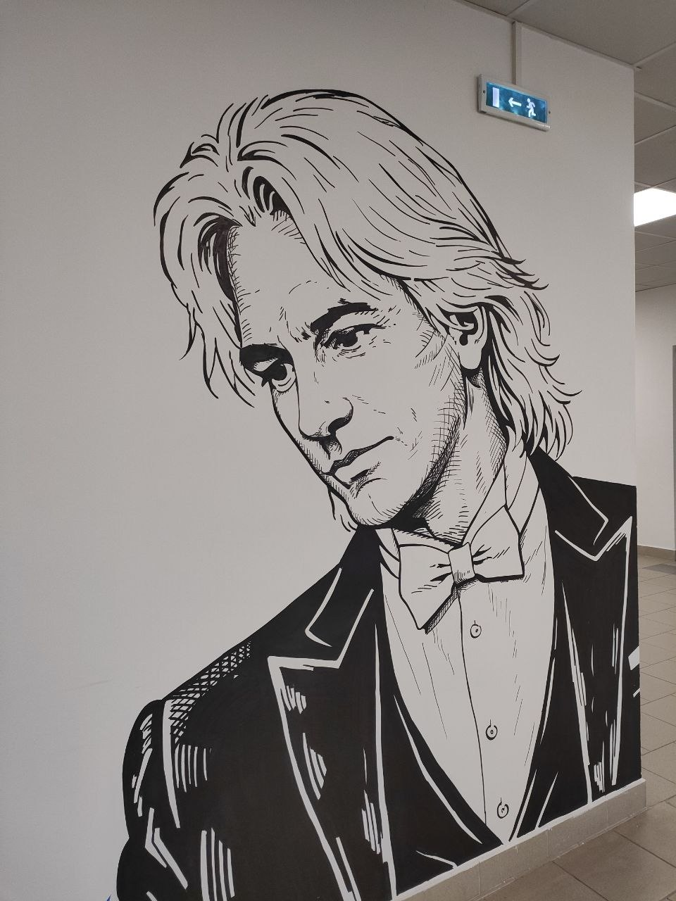
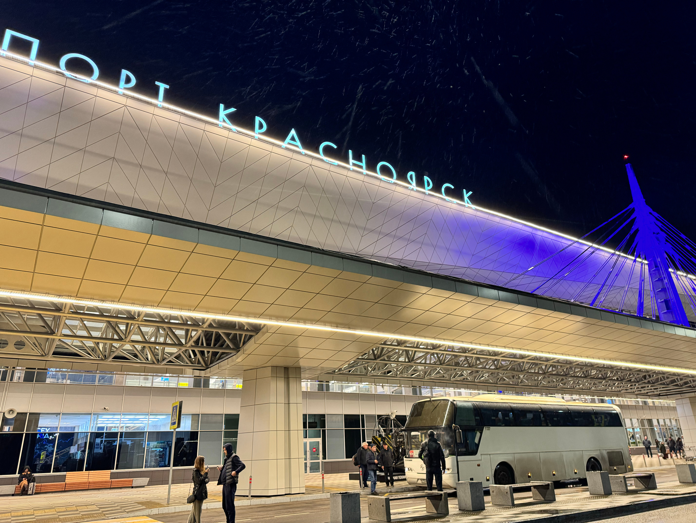

Сайт про Дмитрия Хворостовского
Хворостовский: Великий Певец
Дмитрий Александрович Хворостовский очень творческая Личность. Он писал разные альбомы, треки, давал концерты. И сегодня Я поведаю Вам о его биографии, жизни, наследию. Приятного Просмотра!
О Проекте
Меня Зовут Логинов Ростислав Я из Школы №161. Я создавал этот проект более 2 месяцев. И надеюсь Вам понравится!
Также, хочу упомянуть, что проект доступен на всех типах устройств.
Биография
Детство Хворостовского
Дмитрий Александрович Хворостовский родился 16 октября 1962 года в Красноярске. Его семья не была особо музыкальной. Отец - Инженер-Химик, Мать - Врач. Любовь к музыке юному Хворостовскому привил отец, он пел, играл на фортепиано и собирал дома большую коллекцию записей оперных звезд. В школе юный Дима учился без особого интереса. Он начал потихоньку заниматься фортепиано и петь в детском хоре. В 14 лет он создал свою группу. Но его родители видели его только в классической музыке.
Наследие
После смерти Хворостовского, он оставил огромное наследие за собой. Ниже будет перечислены некоторые вещи, что он успел оставить общественности.

В школе 161
В моей школе есть изображение Хворостовского напротив кабинета музыки.

Международный Аэропорт Красноярск
В 2019 году приказом Президента РФ аэропорту г. Красноярск было присвоено имя Дмитрия А. Хворостовского
В школе 161
В моей школе есть изображение Хворостовского напротив кабинета музыки.
Международный Аэропорт Красноярск
В 2019 году приказом Президента РФ аэропорту г. Красноярск было присвоено имя Дмитрия А. Хворостовского
В школе 161
В моей школе есть изображение Хворостовского напротив кабинета музыки.
Международный Аэропорт Красноярск
В 2019 году приказом Президента РФ аэропорту г. Красноярск было присвоено имя Дмитрия А. Хворостовского